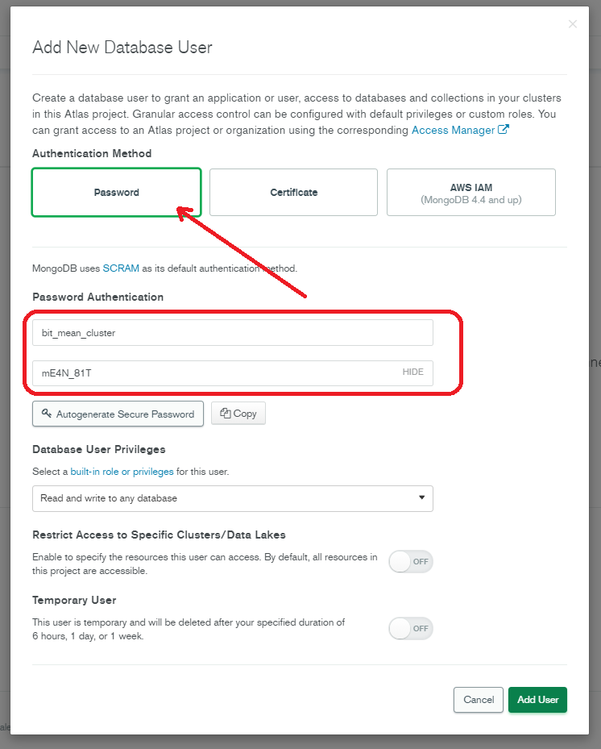
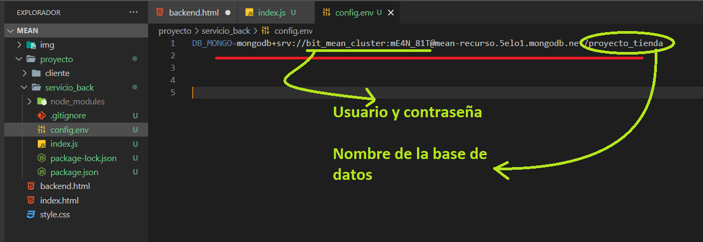

Instalacion y configuracion EXPRESS y MONGO
-
Crear carpeta aparte del proyecto ANGULAR con otro nombre referente al servidor o el servicio de la api

-
Posicionarse en la carpeta correspondiente en la terminal

-
Ejecutar el comando
npm init

-
Configurar los datos basicos del proyecto
-
Corroborar el package.json creado por el comando
-
instalar dependencias basicas de NPM junto con el paquete de NODEMON en solo modo de desarrollo (-D) con el comando
npm i -D nodemon
-
Corroborar la estrucutura dejada por el comando

-
Instalar dependencias del proyecto para la creacion de la API - Express mongo dotenv con el comando
npm i express mongoose dotenv
Corroborar el package.json - Crear el archivo .gitignore donde se agregara el /node_modules
-
Configurar el paquete NODEMON
- Crear un archivo llamado index.js
-
Para fines de testeo crear un
console.log('texto de prueba para nodemon')

-
Configurar el package.json agregandole las lineas para ejecutar el nodemon despues de realizar algun cambio en el proyecto backend
"dev": "nodemon ."

-
Ejecutar el comando
npm run devpara empezar la compilacion del proyecto

Programas que se deben instalar
- MongoDB
- MongoDB compass
Para la creacion de un proyecto en mongo atlas:
- Creacion de cuenta en la pagina de MongoDB
- Creacion de organizacion
- Creacion de proyecto
-
Creacion de cluster
-
Crear usuario administrador de la base de datos o cluster
 -
En network access agregar IP de acceso, 0.0.0.0/0 con el comentario deseado
El proceso de creacion del network puede demorar unos minutos
-
Dirigirse a Databases y hacer la conexion con el mongoDB compass

- Seleccionar otro metodo de conexion (boton inferior derecho del modal)
-
Seleccionar MongoDB compass

-
Ingresar la url con la contraseña respectiva en la misma

-
Crear una base de datos donde se almacenara la informacion y una coleccion para la informacion
use nombre_base_datos
- Ejecutar el proyecto express con el comando
npm run dev - Instalar la extension llamada dotENV en el visual
-
Crear un nuevo archivo llamado config.env
-
Agregar una variable en el archivo config.env nueva donde se configurara el acceso al cluster de mongo
 -
Crear una carpeta nueva llamada config
-
Crear un archivo nuevo llamado db.js en la ruta
/config donde se realizara la configuracion respectiva para realizar la conexion a la base de datos
-
Llamamos el archivo db.js en el index.js
Llamamos la funcion que conecta a la base de datos
-
Crear una carpeta llamada routes
-
Crear un archivo con el nombre que deseemos, para el ejemplo se usara producto.js
La ruta queda de la siguiente manera routes/producto.js
-
Del index.js retiraremos la ruta que configuramos para la creacion del proyecto
-
Creamos la logica que ira en el archivo de rutas haciendo referencia a los productos
-
importamos la ruta en el index.js
-
testeamos la ruta usando el software de postman.
Si lo testeamos por medio de la aplicacion web se debe de descargar el agente postman para poder hacer las respectivas peticiones
Si se instala no se debe de ejecutar nada extra para el funcionamiento del postman
-
Crear una carpeta controllers
-
En la carpeta controllers crear un archivo productoController.js
- En el archivo de productoController.js crear la logica para controlar los respectivos que se encargaran de gestionar las peticiones de la api
-
En el archivo de la ruta routes/producto.js modificar la ruta e importar el controlador para poder gestionar las peticiones por sepaarado
-
Testear por medio del postman para rectificar la respuesta dada en consola
-
Habilitamos en index.js para poder recibir json en el proyecto, con el fin de recibir la informacion dada por medio del postman o el proyecto de front
-
En productoController.js hacemos un
console.log(req.body);para visualizar la informacion recibida por medio del postman
- Evidenciar la informacion recibida por medio de la consolaConfiguracion postman
- Tener en cuenta la ruta configurada en el index.js
- Metodo HTTP: POST
- En el body seleccionar raw y seleccionar JSON para mandar la informacion.

Configuracion de rutas
Mejorando los procesos que se llevaran en las rutas
Enviando datos a travez del controlador a mongo
-
Crear una carpeta en el proyecto llamada models
-
Crear un archivo llamado Producto.js Con la inicial en mayuscula donde se indica que es
un modelo
-
Declaramos en Producto.js Modelo de express una variable para requerir los servicios de mongoose, declaramos un esquema que definira los campos que seran recibidos para guardar
en la base de datos y exportamos el modelo para su uso en otros componentes de la API
-
Declaramos el esquema dentro de
const ProductoSchema = mongoose.Schema({})
Deben de llamarse igual que como los definimos en el modelo de angular (src/app/models/producto.ts)
-
En el controlador del producto controllers/productosController.js empezaremos a dar respuesta segun el estado de las peticiones
-
agregamos un nuevo metodo al controlador productoController.js para consultar los productos de la base de datos
-
agregamos ruta o endpoint en el archivo producto.js de la ruta routes/producto.js que nos permitira acceder por medio del metodo HTTP que se escoja